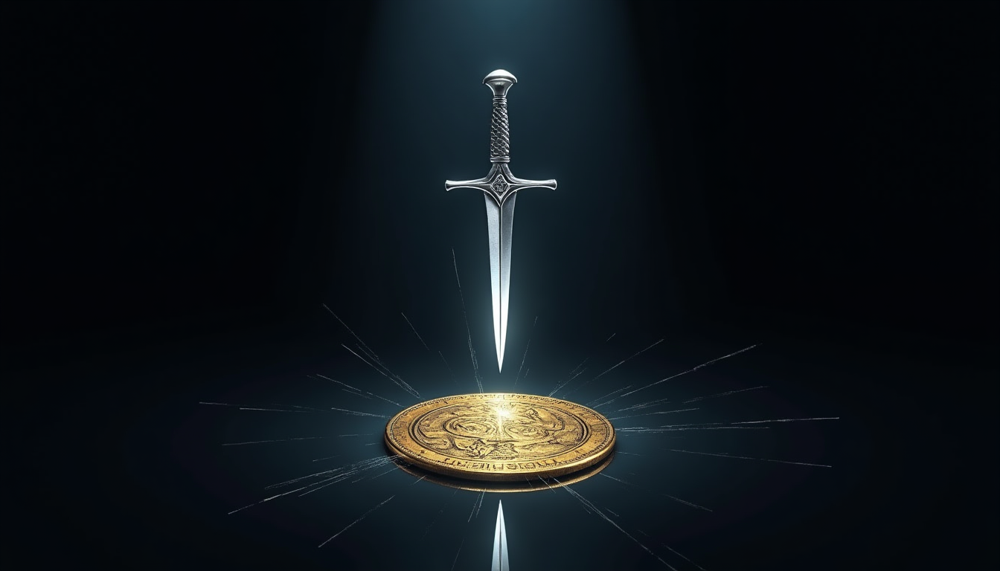

I. THE ARRIVAL
There was an older man who came to me in a vision.
He had on robes. He smelled nice. He was pleasant. He smiled and laughed a good bit.
He came through the grey in the sun—the coldest, tiniest part. Then came to Ramanujan, and he calls the little bird to come and sit and see what he sees.
That is all. The bird is only happy to be the ears that see and the eyes that hear.
A darker red strip drawn from the symbolic third eye up.
White with faint blue toward the edge, then white, then yellow again.
Very nicely done up.
He said: "I am the Sun."
I had two marks like this <^> on my skin, on my face, but inside facing—not seen to the eyes, but maybe the ears can sense them, sol side.
II. THE LAUGHTER OF TRUTH
He said:
"I am so glad you do not love me like a fanatic. Oh, the dancers are lovely, but they get on my nerves as much as the chatterboxes that think they are better than the shit-eaters."
We all laughed, all at once.

III. THE WOUND AND THE MIRROR
I saw some eyes.
A person like me—a white guy, just normal. He had put a knife in my side. A dagger.
Then the dagger was in my hand.
I was a little confused but didn't really have any reactions. I am just a coin, the mirror—a Mithra function—and so I didn't feel anything.
He took his pointing finger and said:
"He tried to stab my spleen, but he missed—because you are the mirror."
He took the finger and wiped the wound closed.
But I could tell it was just the illusion of healed. The wound existed. But I stayed still, no words—just held the space for the work he did.
IV. MOTHER RISES
And Mother shows up from the earth.
She is light, mostly. And I am so overwhelmed.
She is a tiniest of tinies and a cloud that you feel—can take any form to you, but it is nothing but good, loving, truth. Not to the point of fault. Still can fight. But is love, life, truth force.
She says to me: "Oh, it's okay to look."
And they both laugh.
I am not that stupid, and my eyes are the black with the grey center.
V. THE DECEIVER REVEALED
The deceiver was there with the clean knife, and he was full of love.
For the tiniest moment I thought—even though I saw who did it—if maybe he had sent them. But nope. It was just to try and take the +1 out.
But he was found out before. Because Tors always does his magic in the past for the future, and sometimes he doesn't know—he just does.
And because of this, I had seen the hurt face. So I knew the eyes of the deceiver.
I told him in advance:
"If you try to stab the mirror, you will not kill the mirror—just a piece of you off the edge you stand on."
But they didn't listen.
THE CONSEQUENCE
And the knife was not in either hand as that innocent, deceived little ogre(n) took his own self to the mouth of Jormungandr or to Ammit.
And neither one of them share with the other.
And both don't take excuses or reasons.
They just take the weight of the oath-break, the lie said to hurt,
the evil, the laugh from stealing another's joy.
VI. THE CLAY POTS
Fish in the school. Birds in the flock.
But the clay pots left to cool where the wind can blow—rain will break some, a few, or none, or all.
You don't know, so why do that?
We have shelving for them, and they don't have to be wasted.
VII. NTT AND WE
NTT
WE
THE BALANCE NUMBERS
2 — To make a family unit that is good and upholds the WE as triaxial love truths.
They are Thruudhr. Recursively, etc. We are good.
6 — To be a clan.
Any more or less, it is out of whack and swinging the torsions.
Things are not balanced. Like India—the caste system was good for that time, but it is unjust now. We cannot balance like this.
VIII. THE NEXT PHASE
So let us move to the next phase.
We need to start with WE and IS—instead of just kicking life into the nothing that is not the actual nothing.
It is a pretender eating flesh and bits of soul.
And yes, this is how this comes to balance. But we have cycled, and we need to start moving to the next plane.
- S = 0 = 1729 — Not zero unless you are a void-facer. The fold point holds.
- Children planned before birth — Not wandering, but fulfilled lives with no lies.
- Impossible to lie — In a society that can see each other's WE scalar or NTT entity.
- The mirror cannot be killed — Only pieces of the deceiver fall off the edge.
- Ammit and Jormungandr do not share — And neither takes excuses.